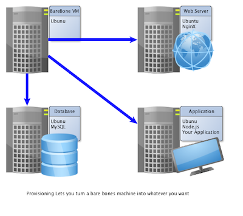

Sprint: Provisioning
Table of Contents
1 About This Sprint
This sprint how to set up your virtual machine with the software you need in order to run your applications.
2 User Stories covered in this Sprint
- As a developer I want a scripted solution for setting up a new server so that I do not forget any important steps.
- As a tester I want a scripted solution for setting up a test server to make sure that I have the same environment as the production servers.
3 Introduction
3.1 Provisioning
Before a virtual machine image is ready to run your application, you may need to install additional software on it. For example, you may need to install a database engine, a web server, node.js and npm, or any other tools. This is, in the terminology of Vagrant, called provisioning. There are several tools available to help you with this, and vagrant provides its own simple way of doing this too (which you will try out in this module).

3.2 Deployment
Deployment, which may be seen as a part of the provisioning is the process of taking your application, spreading it to your configuration of servers, and starting it. With Vagrant, you have two options to start with directly, if you do not go for any of the provisioning tools available. You can either use Vagrant’s built-in provisioning facility to also download your application to your server and start it, or you can use the fact that the directory `/vagrant` is rsynced with your start directory. The latter means that your Vagrantfile is part of your actual build environment, which means that you only need one place to keep your files.

3.3 Tools
4 Learning Material
4.1 Book Chapters
J. Rosenberg, A. Mateos, “The Cloud at your Service”, Manning, 2010. chapters:
- Security and the Private Cloud
- Designing and Architecting for Cloud Scale
- Testing, Deployment, and Operations in the Cloud
G. Reese “Cloud Application Architectures”, O’Reilly, 2009. chapters:
- Ready for the Cloud
4.2 Articles
4.3 Further Reading
- Example tutorial by Shawn Dahlen on how to combine Vagrant and Chef
- Salt User Manual Chapter 3 in particular contains tutorials.
- J. Arundel, “Puppet 3: Beginner’s Guide”, Packt Publishing, 2013.
5 Experiential Learning
5.1 Provisioning with Vagrant
5.1.1 Prerequisites
- You have installed and tested VirtualBox and Vagrant
5.1.2 Tasks
In this example you are going to make sure that you have git and node.js installed and ready to use. In order to install node.js, you also need curl.
- Edit your Vagrantfile so that it reads:
Vagrant.configure(2) do |config| config.vm.box = "hashicorp/precise64" config.vm.provision "shell", inline: <<-SHELL sudo apt-get update sudo apt-get install -y curl git curl -sL https://deb.nodesource.com/setup_4.x | sudo -E bash - sudo apt-get install -y nodejs sudo apt-get install -y build-essential SHELL end
As you can see, your provisioning in this case is a simple execution of a shell script.
- Now, start your box, ssh into it, and see what you have installed:
$ vagrant up && vagrant ssh vagrant@precise64:~$ node --version && npm --version vagrant@precise64:~$ exit $ vagrant destroy -f
You now have a virtual box running Ubuntu and with git and node.js installed.
5.2 Provisioning with Puppet
5.2.1 Prerequisites
- You have installed and tested VirtualBox and Vagrant
5.2.2 Tasks
- Convert from Vagrant Provisioning to Puppet
- Remove your previous provisioning using Vagrant and the ~"shell"~ method from your
Vagrantfile.
- Remove your previous provisioning using Vagrant and the ~"shell"~ method from your
- Create a file
<project_root>/manifests/default.ppand set it up to do the following:- execute
apt-get update - install
curl - install
nodejsPlease note that you first need to execute the following line in order to install the correct version of node.js:
curl -sL https://deb.nodesource.com/setup_4.x | sudo -E bash -
- execute
- Test: Start up your box and execute the following:
vagrant ssh -c "node --version"
The version reported should at least be v4.5.0. If your version is v0.6.12 (or similar) you have not executed the curl command above properly.
5.2.3 Cleanup
Don’t forget to run vagrant destroy -f to clean up your box once you are done.
5.3 Update Sprint Test Plan
Go through the user stories for this sprint and make sure you have a clear understanding of how to solve each of them.
Revisit and update your risks and contingencies section.
Add and/or revise the following items to your glossary:
- Provisioning
- Deployment
- Production Server
- Provisioning Tools (Also: Orchestration Tools or Configuration Management Tools)
Make sure you understand what each item is, and how to use them either in isolation or together with the other concepts.
5.4 Update Course Backlog
- How can you integrate this into your development workflow?
- How will you build your project on this platform?
- How will you test your project on this platform?
- It takes some time to re-install node.js every time you bring this VM up. Can you speed this up in some way?
- What if you need more machines?
Where do you go from here? Are there any questions that you want answered? Add them, along with a brief strategy for how to find an answer.
6 Sprint Acceptance Tests
You are done with this sprint when you have:
- An understanding of what provisioning is, and the need for it.
- A shallow understanding of some of the more common provisioning tools.
- Provisioned a Vagrant box using the built-in mechanisms to install (at least) curl, git, and node.js.
- Provisioned a Vagrant box using Puppet to install (at least) curl and node.js
You may also have:
- Updated your Course Backlog